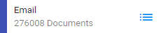
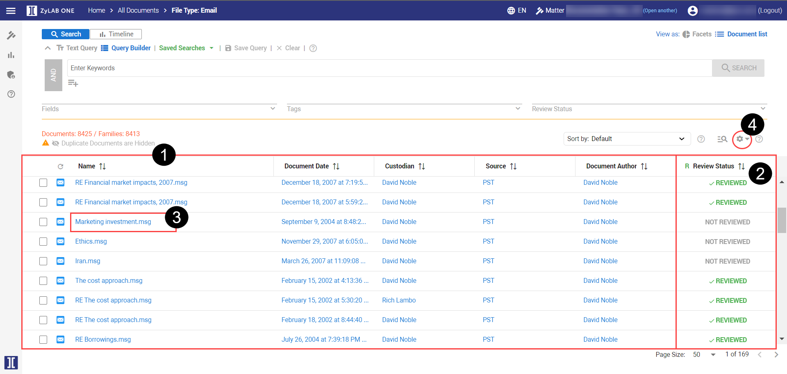
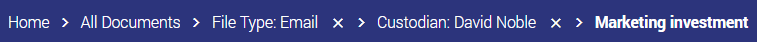
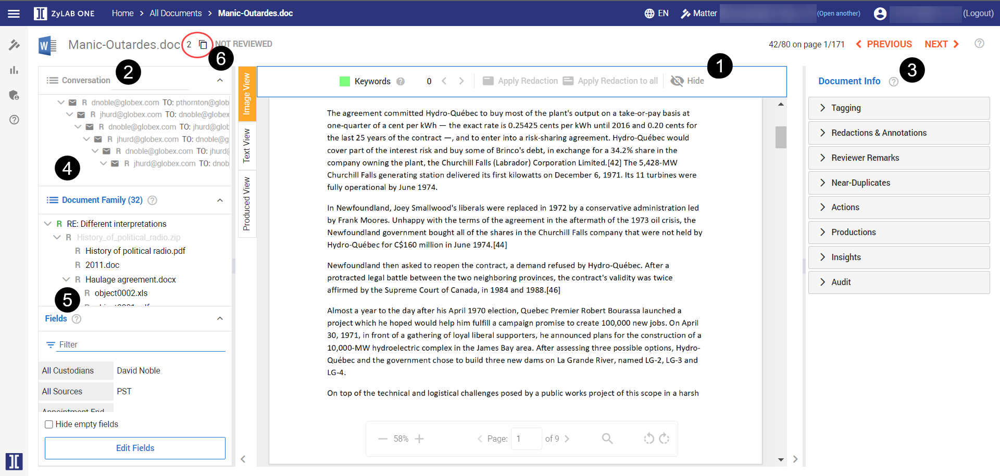
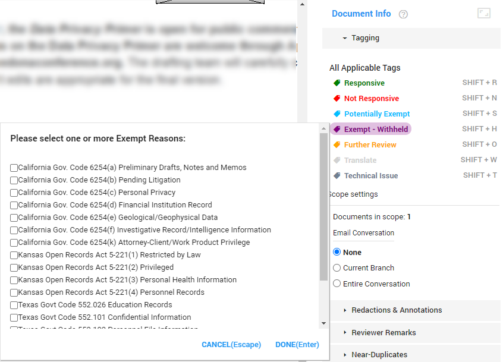
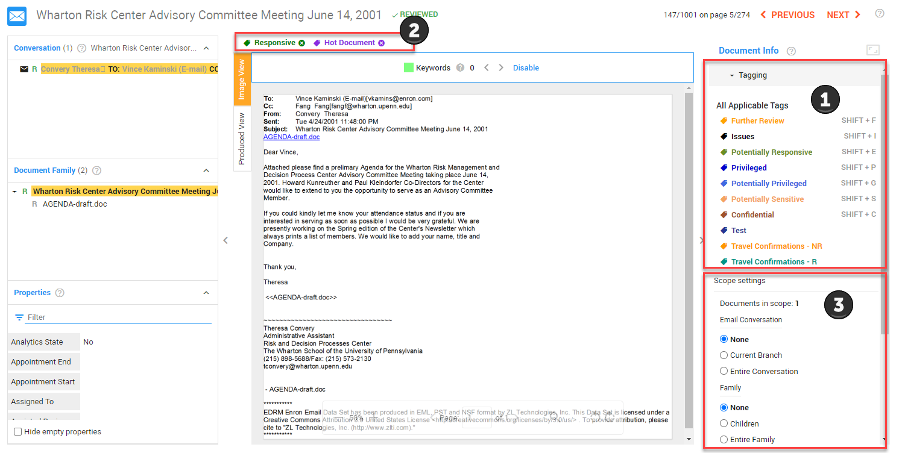
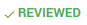
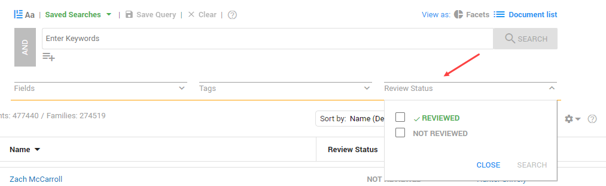
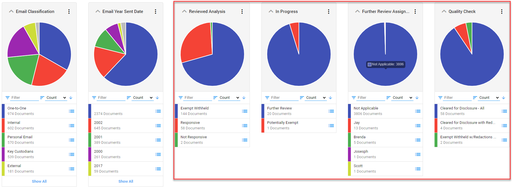

This section covers reviewing and taking actions on your documents in preparation for their production.
On the Matter Home Page, select Browse.
To see a detailed list of your document set, perform a linear review of your documents, or take actions such as bulk tagging and creating a production set, simply open the Document List, designated by this icon:

When selected from an individual Facet,
only the documents pertaining to that Facet will be returned in Document List view.


Columns can be sorted by selecting the column header or from the Sort by filter box.
You can perform these List Actions:
For more information on Document List View features, watch this video:
|
|
Tip: The bread trail at the top of the screen will tell you where you are and how you got to the filtered data set. You can backtrack to any point in the trail using the links.  |
To view a document, simply select it from the list view grid from the Document List view.

The document viewer is divided between the document image (1), which can be viewed as either the processed image or in the 'as produced view', and informational panes (2) on the left and action panes (3) on the right.
Use the directional arrows at the top of the screen to advance to the next document in your review.

In order to maximize review efficiency, ZyLAB ONE presents documents in context of their relationship to other documents. This means that when viewing an email, not only will you be able to see all attachments to that email, but also the entire email conversation or thread. In addition, the document properties (or the metadata) is also available for review. Read more in topic Conversation, Document Family & Fields.
Email Conversations (4) - The Conversation Panel is displayed when an email is being viewed and shows the email thread of the email displayed in the document viewer. The email being viewed is highlighted in yellow within the thread. Click on an email message to open it in
Document View
Families (5) - The Document Family panel is displayed when a non-email document is being viewed or if there are attachments to an email that is being viewed. The document being viewed is highlighted in yellow. Click on any document in the list to open it in the viewer.
Duplicates (6) – When viewing a document, ZyLAB ONE provides direct insight into exact duplicates of the document you are viewing. Select the icon to view the list of duplicates.
icon to view the list of duplicates.
|
|
Tip: When hidden content is detected with ZyLAB’s Document Insights, you are notified with the |
When you tag a document, you add a label or code that defines the contents of the document. For example, if the document is relevant to the records request, you would apply the Responsive tag. If it is not, you would tag it as Not Relevant, and documents which are being withheld due to an exemption would be tagged as Exempt Withheld.

Each matter will
have its own set of available tags. In addition, custom tags can be created if you
have the rights to do so.

Watch this video on Document Tagging:
While your matter may have auto-redaction rules already applied, you can manually redact sensitive and exemption information in your documents as you are conducting your review. In addition, each redaction can be associated with exemption codes to identify the regulations under which the redaction is made. Redactions can be permanently applied to documents during the production process (see Produce/Export Documents).

To create a redaction, select the Redact button on the right side of your screen
(or hit the letter 'R' on your keyboard).
This will enable the redaction drawing tool. Once enabled, draw a box around the information to be redacted, select edit from the redaction pane to configure the exemption code and redaction appearance. For more information about redactions—see Redactions & Annotations.
Watch this video to learn how to add the auto-redaction to the dataset:
Watch this video to learn how to add an auto-classification rule to redact personal emails:
|
|
Tip: To find documents containing redactions, use the field 'contains redaction' or look for the facet 'Contains Redaction'. |
ZyLAB ONE provides you with many resources to monitor your review progress.
Review Status  This indicates that someone has reviewed and applied a tag/code to that document.
You can easily filter on the Review Status from the search bar.  Facet Dashboard Using the Facets you can quickly see how many documents are reviewed or not,
as well as a visual breakdown of how documents are tagged or coded. 
Depending upon your matter settings, upon applying certain tags to your document you may see Reviewed.

 icon next to the document name.
icon next to the document name.